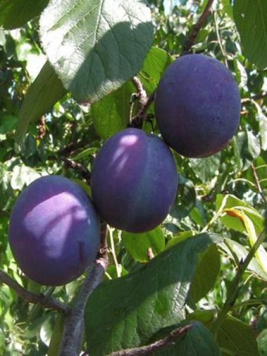

Slivoň švestka nebo švestka domácí (Prunus domestica) je známý strom z rodu slivoň (Prunus) a čeledi růžovitých. Plodem slivoně švestky je švestka (ve východních Čechách slíva, na střední Moravě kadlátka či kadlátko, na východní Moravě trnka a ve Slezsku sliva či slivka[2]). Je to peckovice modré až fialové barvy, mírně nasládlé chuti. Plody se konzumují syrové, konzervované mražením nebo kompotované, vyrábějí se z nich povidla, plní se jimi ovocné knedlíky, buchty i koláče, suší se nebo se z nich po zkvašení destilací vyrábí slivovice. Ve střední Evropě má pěstování švestky domácí, stromovité dřeviny nižšího vzrůstu, dlouhou tradici. Švestka bývá součástí ovocných sadů. Snadno se množí vegetativně, výmladky. Je spíše teplomilná a daří se jí v mírném podnebí. Je známo mnoho různých šlechtěných forem domácí švestky. Většinou se jedná o odrůdy krajového významu. Mezi ně patří i šlapanická švestka.[3] Popis Jedná se o strom nebo keř, který je až 10 m vysoký. Korunu má obvykle vejcovitou a bohatě větvenou.[4] Kmen má hnědošedou, matnou borku, která je podélně mírně rozpraskaná.[4] Letorosty jsou chlupaté až olysalé. Mladé jsou zelené a ze začátku mírně chlupaté. Starší větévky jsou lysé a mají fialově hnědou až černohnědou barvu. Někdy mají též kolce.[5] Pupeny většinou nabývají kuželovitého tvaru, jsou špičaté, jejich šupiny mají tmavohnědou až fialově hnědou barvu.[4] Listy rostou střídavě nebo nahloučené na brachyblastech. Čepel je obvejčitá až podlouhle vejčitá či dokonce eliptická.[5] Její délka se pohybuje v rozmezí 2–10 cm, nejčastěji je však rozmezí 4–8 cm. Šířka čepele je 1,5–5 cm. Vrchol je často tupě špičatý až tupý, na bázi je klínovitě zúžený a okraje jsou jemně vroubené nebo pilovitě zubaté. Svrchní strana je šedozelená až tmavozelená, lysá či slabě chlupatá. Na spodní straně je světlejší a krátce chlupatá až olysalá. Řapík je 1–2 cm dlouhý a s 1 až 2 žlázkami nebo výjimečně bez nich.[4] Květy obvykle vyrůstají po 1 až po 3, nejčastěji však po 2, jsou zelenavé a v průměru měří 1,5–2,5 cm. Vykvétají ve stejnou dobu, kdy raší listy. Květní stopka je dost krátká, 0,5–1,5 až 2 cm dlouhá. Kališní lístky jsou 2,5–5 mm dlouhé, vejčité a slabě chlupaté. Korunní lístky jsou obvejčité až eliptické s délkou od 7 do 15 mm, široké 3–8 mm a krátce nehetnaté.[4] Doba kvetení je od dubna do května.[5] Plod je většinou podlouhlý až široce vejcovitý, 2–5 cm dlouhý, někdy i elipsoidní a výjimečně nabývá kulovitého tvaru. Barva je tmavomodrá, fialovomodrá až modročerná či načervenalá. Má výraznou aromatickou vůni, a příjemně nasládlou chuť. Je objemný s podélnou rýhou, dužnatý a šťavnatý.[4] Pecka je elipsovitá, na vrcholu špičatá, na bázi zaoblená a bočně zploštělá. Má hnědou až červenohnědou barvu.[4]